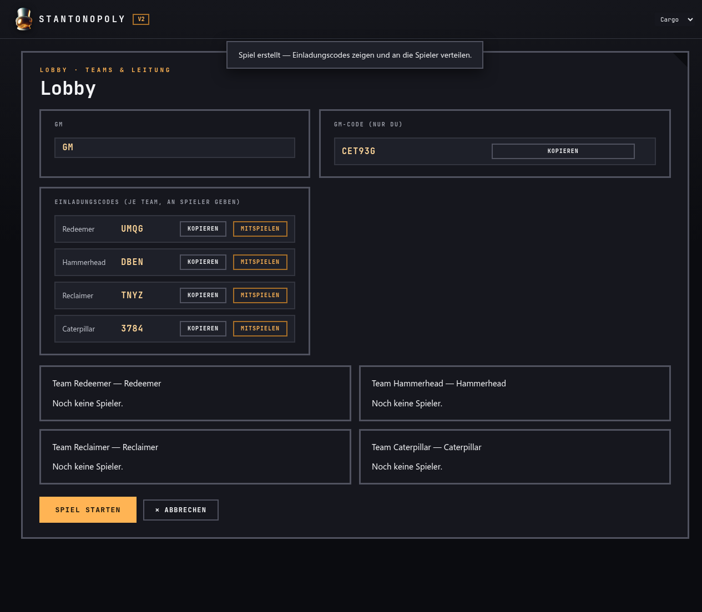
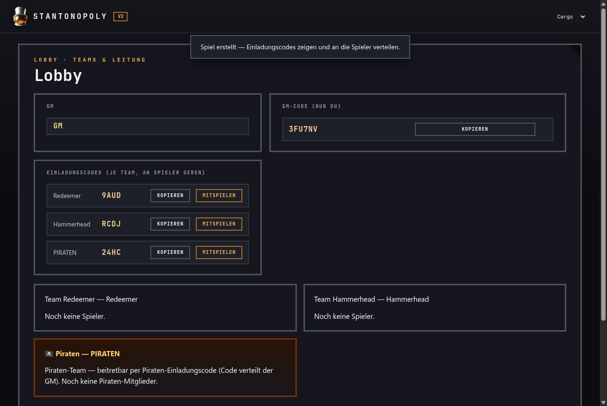
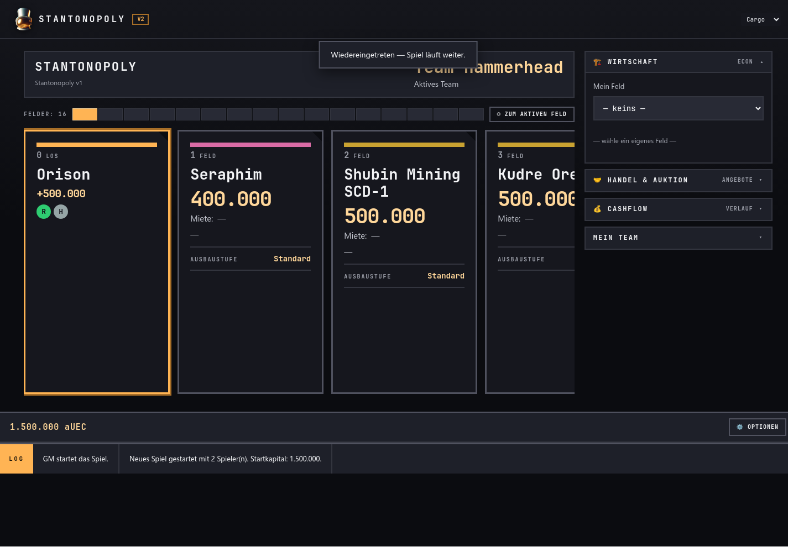
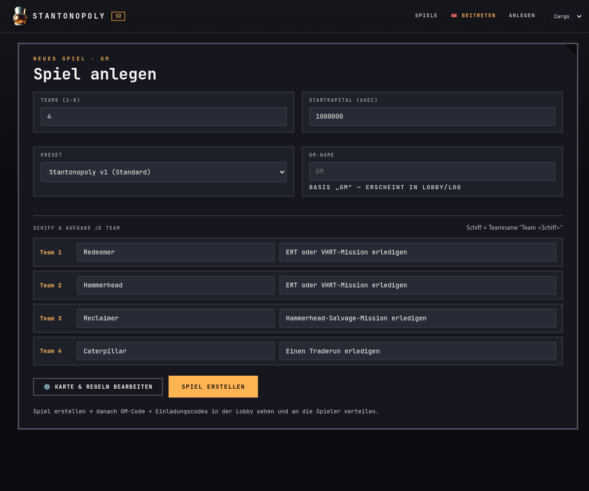

STANTONOPOLYV2
Was du als Spieler, Pirat, Teamleiter, Manager oder GM tun musst — Schritt für Schritt.
Normaler Spieler
1. Einem Spiel beitreten
Der Game Master (GM) erstellt das Spiel und gibt jedem Team einen Einladungscode. Den Code deines Teams erfährst du vom GM. Öffne Stantonopoly, klicke „Mit Code beitreten", gib den Code und deinen Namen ein.

2. Dein Team und die Teamleader-Wahl
Nach dem Beitritt ist dein Team eine Karte in der Lobby mit deinem Namen. Bevor das Spiel startet, stimmt dein Team über den Teamleader ab — das ist die Person, die später bauen und handeln darf.
3. Das Spielfeld: Würfeln und Ziehen
Das Spielfeld ist eine horizontale Kartenreihe — die Orte aus Star Citizen. Bist du am Zug, ist oben „DU BIST AM ZUG" zu sehen und der WÜRFELN-Button leuchtet orange. Klicke ihn, um dein Schiff über die Felder zu ziehen.

4. Feld auswerten: Kaufen, Gebühr, Ereignis, Gefängnis
Jedes Feld hat seine Regeln:
| Feldtyp | Was passiert? |
|---|---|
| LOS | Beim Überqueren erhältst du den eingestellten Bonus z.B.+500.000 aUEC. |
| Grundstück (frei) | Du darfst es kaufen (Kaufpreis + Farbgruppe) oder skip. |
| Grundstück (fremd) | Du zahlst Miete an den Besitzer (je Ausbaustufe). |
| Ereignis | Ereignis-Effekt (z. B. Bonus +125.000 bei "Wrack voller Gold"). |
| Steuer | Steuer wird erhoben. |
| Gefängnis | Zahl Freikauf oder sitze Zügen ab (Modal mit Wahl). |
| Frei Parken | Neutral — nichts passiert. |
| Spezial-Grundstück | Besitz geht beim Landen sofort auf dich über (auch wenn es einem anderen Team gehörte). Als Besitzer erhältst du bei jeder LOS-Überquerung eine Strafgebühr (zahlt) oder einen Bonus (bekommt) — je eingestelltem Wert. |
5. Wirtschaft, Handel & Auktion nutzen
Rechts in der Seitenleiste kannst du:
- Wirtschaft (ECON): Dein Feld auswählen, ausbauen, hypothekieren, abbauen.
- Handel & Auktion: Felder anbieten, auf Angebote antworten, eigene Felder versteigern.
- Cashflow (Verlauf): Alle Geldbewegungen deines Teams einsehen.
6. Zug beenden
Nach deiner Aktion klicke NÄCHSTER ZUG, um ans nächste Team zu übergeben. Das Ziel: das letzte Team mit Vermögen gewinnen.
7. Optionale Regeln im Spiel
Nicht jedes Spiel sieht gleich aus: Manche Regeln sind im Preset an- oder abschaltbar und gelten nur, wenn sie für dieses Spiel aktiv sind:
- Armistice-Felder OPTIONAL — Schutz-/Ruhe-Felder (Bonus/Neutral), nur wenn im Preset aktiv.
- Aufgaben OPTIONAL — zusätzliche Aufgaben zum Erledigen/Bestätigen.
- Piratensystem OPTIONAL — ein Piraten-Team, das Schutzgeld kassiert.
- Verkauf an die Bank OPTIONAL — eigene Felder direkt an die Bank verkaufen.
- Bauregel (Farbreihe) OPTIONAL — Ausbauen nur in der ganzen Farbreihe und gleichmäßig.
Pirat
1. Als Pirat einsteigen
Das Piratenteam ist ein eigenes Team und hat seinen eigenen Piraten-Einladungscode. Der GM verteilt ihn. Du trittst damit bei wie bei jedem anderen Team.

2. Was Piraten können — und was nicht
- Eigene Würfelregel — die Piraten ziehen mit eigener Würfelzahl über das Brett.
- Schutzgeld kassieren, Fluchten entscheiden (Erwischt/Entwischt).
- Keine Wirtschaft (keine Felder kaufen/bauen), kein Handel, keine Auktion.
- Die Piraten können nicht gewinnen — ihr Beutegut zählt nur als Statistik am Ende.
3. Begegnung: Schutzgeld oder Flucht
Landet ein normales Team auf dem Feld der Piraten, öffnet sich ein Entscheidungs-Modal:
- Schutzgeld zahlen: Das Team zahlt den festgelegten Betrag, die Runde läuft normal weiter.
- Flucht versuchen: Das Team hat bis zur nächsten Runde zeit in Star Citizen zu Fliehen. Entscheiden tust du als Pirat (im Urteils-Modal): Erwischt (höheres Strafgeld) oder Entwischt. Wenn das Team es bis zu seinem nächsten Zug nicht schaffen konnte zu Fliehen und du als Pirat es auch nicht als entwischt bestätigt hast, gilt es automatisch als erwischt.
- Fair Play: Hier wird wieder darauf vertraut das alle Fair Spielen denn selbst wenn ein team es schaft In-Game vor dir als Piraten zu fliehen gilt es als erwischt wenn du es nicht vor dessen nächstem zug so bestätigst.

4. Teamleader der Piraten
Wie bei normalen Teams stimmen die Piraten einen Teamleader ab (oder der GM ernennt einen). Der Piraten-Leader führt die Team-Aktionen aus, z. B. das Urteil fällen ob erwischt oder entwischt. Es sollte also jemand sein der es leichter hat parallel zu Star Citizen hier die entscheidung einzugeben
5. Bot-Pirat: wenn niemand das Piratenteam spielt
Ist das Piratensystem aktiv, aber keinem einzigen Spieler ist das Piratenteam beigetreten, übernimmt ein Bot die Piraten. Das Urteil (Erwischt/Entwischt) wird dann automatisch und zufällig gefällt — niemand muss warten.
- Wahrscheinlichkeit „Erwischt": startet bei 40% und steigt mit dem Besitzanteil des fliehenden Teams an allen kaufbaren Feldern der Karte bis max. 65%. Wer mehr besitzt, wird also wahrscheinlicher erwischt (je kaufbares Feld linear mehr bis zur Obergrenze).
- Der Bot erwartet keine Eingabe — sobald ein Team flieht, entscheidet er sofort.
- Sobald ein Spieler dem Piratenteam beitritt, übernimmt er die Kontrolle und der Bot schaltet sich ab — die Entscheidung liegt dann wieder beim Piraten(team)leader wie oben beschrieben.
- Piraten können nicht aufgeben. Das Piratenteam bleibt immer Teil des Spiels. Ein Piraten-Spieler kann jederzeit das Spiel verlassen — ist er der letzte, übernimmt ab sofort der Bot das Piratenteam (die Figur bleibt auf dem Feld, niemand muss sich kümmern).
Teamleiter
1. Teamleader werden
Vom Team-Vote vor Spielstart oder vom GM per Ernennung. Der Teamleader kann die Rolle jederzeit an ein anderes Teammitglied weitergeben.
2. Deine besonderen Aktionen
| Aktion | Erklärung |
|---|---|
| Würfeln | Du würfelst für das Team und bewegst eure Figur. |
| Ausbauen OPTIONAL | Dein Feld in der Wirtschaft auswählen → Ausbaustufe erhöhen (Miete steigt). Nur möglich, wenn die Bauregel im Preset aktiv ist — die bestimmt auch, ob man nur die ganze Farbreihe bauen darf. |
| Hypothek / Abbau | Feld beleihen oder abreißen (Sanierung bei Geldnot). |
| Handel / Auktion | Feld Verkauf anbieten, Kauf anbieten, auf Angebote antworten, versteigern. Verkauf an die Bank nur, wenn im Preset aktiv. |
| Aufgaben OPTIONAL | Abschluss einer Aufgabe bestätigen — nur wenn die Aufgabenregel im Preset aktiv ist. |
3. Wirtschaft im Blick

4. Leader abgeben
Über Mein Team kannst du den Teamleader-Status an ein Mitglied deines Teams übertragen. Gut, wenn du mal keine Zeit hast oder jemand anderes die Wirtschaft übernehmen soll.
Manager
1. Wofür ist der Manager da?
Ein normaler Spieler darf im Preset-Editor nur temporär für sein eigenes Spiel ändern („Standardmodus"). Ein Manager kann Presets dauerhaft bearbeiten, neu erstellen und speichern. Den Manager-Code bekommst du als Person vom Admin.
2. Im Preset-Editor einloggen
Beim Spiel-Erstellen öffnest du den Editor über „ Karte & Regeln bearbeiten". Dort unten siehst du die Manager-Bar: Gib deinen Manager-Code ein und klicke AKTIVIEREN.

3. Was ein Manager darf
- Bestehende Presets bearbeiten und speichern (auch eingebaute, die bleiben als Preset erhalten).
- Neue Presets erstellen und dauerhaft speichern.
Preset-Editor
1. Was ist ein Preset?
Ein Preset ist eine komplett vorgefertigte Spielkonfiguration: die Feldreihe (Karte) plus alle Regel-Einstellungen. Beim „Spiel erstellen" wählst du ein Preset aus (z. B. „Stantonopoly v1") und erhältst damit die Standard-Karte und Standard-Regeln dieses Presets.
2. So öffnest du den Editor
Beim Spiel-Erstellen klickst du „ Karte & Regeln bearbeiten". Ohne Manager-Code arbeiten alle im Standardmodus: Deine Änderungen gelten nur für das Spiel, das du gerade erstellst. Gibst du einen Manager-Code ein (siehe Abschnitt Manager), kannst du Presets auch dauerhaft speichern.
3. Die Karte bearbeiten (Felder)
Oben im Editor siehst du die Feldliste. Jedes Feld hat einen Typ, Namen, Preis und eine Farbgruppe. Per / verschiebst du die Position, per löschst du ein Feld. Beim Namen tippen erscheinen automatisch Vorschläge echter Star-Citizen-Orte (aus dem eingebauten SC-Katalog) — du musst den vollen Namen nicht eintippen.
| Feldtyp | Bedeutung | Einstellbar |
|---|---|---|
| LOS | Startfeld mit Bonus beim Überqueren. | Name, BONUS-Betrag (ab „Stantonopoly v1" frei wählbar). |
| Grundstück | Kaufbares Feld (wie im Monopoly). | Name, Kaufpreis, Farbgruppe. |
| Ereignis | Man kann auf diesen felder Geld Verdienen oder Verlieren. | Name und Effekt also ob man hier geld bekommt oder zahlen muss (Bonus wird negativ eingetragen.). |
| Steuer | Man muss einen Betrag zahlen | Name, Steuerhöhe in aUEC |
| Gefängnis | Nächste runde aussetzen oder sofort freikaufen. | Name, Preis zum Freikaufen |
| Frei Parken | Neutrales Feld. | Name. |
| Spezial-Grundstück | Besitz geht beim Landen sofort an das landende Team über — auch wenn es einem anderen gehört. Nicht handelbar/ausbaubar/hypothekierbar. | Name, LOS-Strafe/Bonus (positiv = Strafgebühr, negativ = Bonus). |
4. Die Regeln — alles was du einstellen kannst
Im unteren Teil des Editors findest du die Regel-Gruppen. Spielregeln, die nur optional aktiv sind, sind im Editor per Schalter/Häkchen an- und abschaltbar — in dieser Anleitung sind sie mit OPTIONAL gekennzeichnet. Was in dieser Anleitung als fest beschrieben ist (z. B. „der Teamleader würfelt"), gilt nur, solange die zugehörige Option aktiv ist.
| Gruppe / Option | Was es steuert | Status |
|---|---|---|
| Würfel | Würfel-Konfiguration (z. B. 1W6, 2W6, freier Wert). | Standard |
| Zugzeit | Zeit pro Teamzug in Sekunden (Timer). | Standard |
| Mieten (Ausbaustufen) | Mietmultiplikator je Ausbaustufe (ALLEIN, CYCLONE, STORM, BALLISTA, ARMISTICE). | Standard |
| Baukosten | Kosten pro Ausbaustufe. | Standard |
| Hypothek / Entlasten | Satz für das Beleihen und das Entlasten eines Feldes. | Standard |
| Abbau / Rückerstattung | Was du beim Abriss (Abbau) eines Feldes zurückbekommst. | Standard |
| Verkauf an die Bank | Eigene Felder direkt an die Bank verkaufen (Bank-Auszahlung). | OPTIONAL |
| Auktion | Zeitdauer einer Versteigerung. | Standard |
| Abstimmung | Zeitdauer von Abstimmungen (z. B. Team-Aufgabe). | Standard |
| Armistice | Schutz-/Ruhe-Zone-Feld im Spiel (Bonus/Neutral). | OPTIONAL |
| Bauregel (Farbreihe) | Ausbauen nur in der ganzen Farbreihe und gleichmäßig (Monopoly-Bauregel). | OPTIONAL |
| Aufgaben | Aufgabenregel aktiv (Aufgaben abschließen/bestätigen). | OPTIONAL |
| Aufgaben-Timer | Zeitlimit pro Aufgabe. | nur bei Aufgaben |
| Aufgaben brauchen Handel | Aufgaben setzen eine Handels-Aktion voraus. | nur bei Aufgaben |
| Piratensystem | Piraten-Team im Spiel. | OPTIONAL |
| Piraten-Würfel | Eigene Würfelregel der Piraten. | nur bei Piraten |
| Schutzgeld | Betrag, den Teams bei einer Piraten-Begegnung zahlen. | nur bei Piraten |
| Strafgeld (Erwischt) | Multiplikator für die „Erwischt"-Flucht (Strafgeld). | nur bei Piraten |
| Piraten-Wartezeit | Wie viele Teamzüge die Piraten auf einem Feld warten, ehe sie weiterziehen. | nur bei Piraten |
| Piraten einmal pro Runde | Ein Team wird pro Durchgang nur einmal von den Piraten angegangen. | OPTIONAL (nur bei Piraten) |
5. Farbgruppen und Ausbaustufen
Die Farbgruppe eines Grundstücks bestimmt, wie es aussieht und (bei aktiver Bauregel) ob es ausbaufähig ist. Die Ausbaustufen (ALLEIN → CYCLONE → STORM → BALLISTA → ARMISTICE) bestimmen, wie stark Miete und Baukosten wachsen — du stellst je Stufe den Multiplikator ein.
Game Master (GM)
1. Ein Spiel erstellen
Klicke „Spiel erstellen", wähle die Anzahl Teams (2–8), ein Preset (z. B. „Stantonopoly v1"), und gib eine Schiffsausstattung je Team an. Beim Eintippen des Schiffsnamens erscheinen Vorschläge echter Star-Citizen-Schiffe (aus dem SC-Katalog). Optional im Preset-Editor () schaltest du Regeln an/aus: Piratensystem OPT, Aufgaben OPT, Armistice OPT, Bank-Verkauf OPT, Bauregel OPT.

2. Codes verteilen und starten
In der Lobby siehst du den GM-CODE („NUR DU") und die Einladungscodes je Team. Verteile die Team-Codes an deine Spieler (und den Piraten-Code ans Piratenteam). Wenn alle drin sind: SPIEL STARTEN.

3. Während des Spiels
- Pausieren / Fortsetzen: Das Spiel anhalten und später weiterlaufen lassen.
- Teamleader ernennen: Falls ein Team streitet, kannst du per GM-Option einen Teamleader bestimmen.
- Beobachten: Du siehst das ganze Brett und die Logs.
4. Spielende
Das Spiel endet, wenn nur noch ein Team Vermögen besitzt. Das Endresultat zeigt den Sieger und — falls Piraten aktiv waren — die Piraten-Beute als Statistik. Beendete Spiele findest du in der Spiele-Liste (Tab „Abgeschlossen").